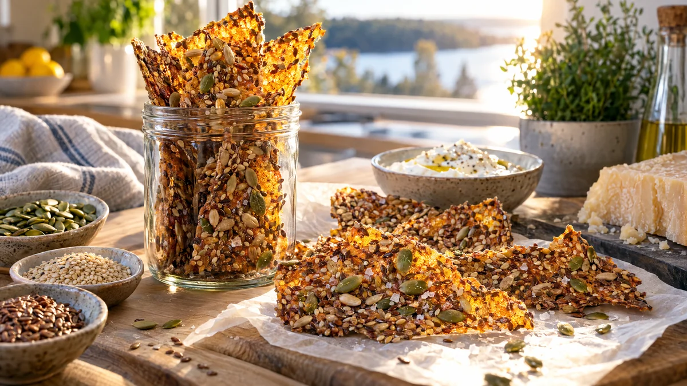

RESTFEST · RECEPTBröd · Fika & bakning · Tillbehör
Fröknäcke med pumpafrön, sesam och flingsalt
De sista nävarna frön i skafferiet, lite majsmjöl, olja och kokande vatten. Smeten breds ut tunt och torkas långsamt i ugnen till ett knaprigt, gyllene knäcke som ser ut som en mosaik när ljuset lyser igenom. Glutenfritt, veganskt och betydligt dyrare i butiken än det är svårt att göra.
- Förberedelse
- 10 min
- Tillagning
- 60 min
- Portioner
- 1 plåt (ca 20 bitar)
- Nivå
- Nybörjare
 Det här behöver du
Det här behöver du
Tryck på + vid det du behöver köpa.
Topping
Gör så här
- Sätt ugnen på 150 grader.
- Blanda majsmjöl, alla frön och salt i en skål.
- Häll i oljan och det kokande vattnet och rör om ordentligt. Smeten är rinnig först men tjocknar när linfröna sväller. Låt den stå i 2–3 minuter.
- Bred ut smeten mycket tunt på en plåt med bakplåtspapper, med baksidan av en sked eller en slickepott. Den ska täcka nästan hela plåten och vara jämntjock, så att kanterna inte bränns innan mitten är klar.
- Strö över flingsalt och de extra fröna.
- Grädda i mitten av ugnen i ca 60 minuter, tills knäcket är gyllene och torrt även i mitten. Lyft ett hörn och känn efter, det ska släppa från pappret.
- Låt knäcket svalna helt på plåten och bryt det sedan i bitar. Vill du ha raka bitar, skär rutor med en pizzakniv efter 15 minuter i ugnen.
Dekoration och servering
- Bryt knäcket för hand i stora, oregelbundna flak och ställ dem på högkant i en burk eller ett glas.
- Servera med labnehen i recept 26, romescon i recept 25 eller en bit lagrad ost.
- Förvara knäcket i en lufttät burk, där håller det sig knaprigt i ca 2 veckor.
- Fint att ge bort i en hög glasburk med ett linnesnöre.
- Bakar du till någon med celiaki, kontrollera att majsmjölet är märkt glutenfritt.
Mått och ugnstemperaturer
Måtten är svenska (dl, msk, tsk, krm). Ugnstemperaturerna gäller vanlig ugn med över- och undervärme; med varmluft, sänk med 20 grader.